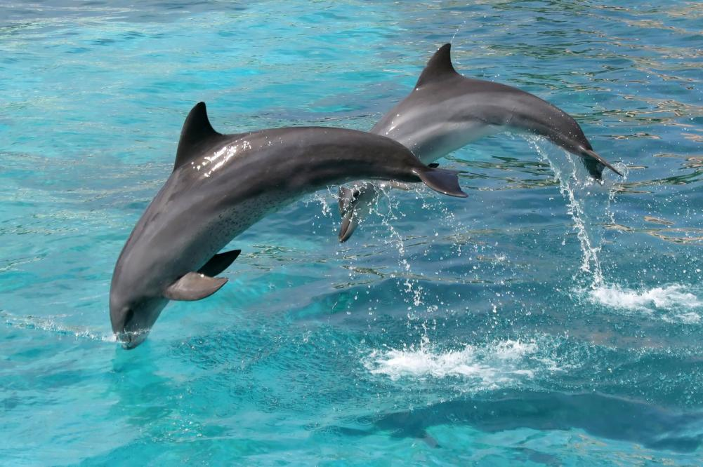
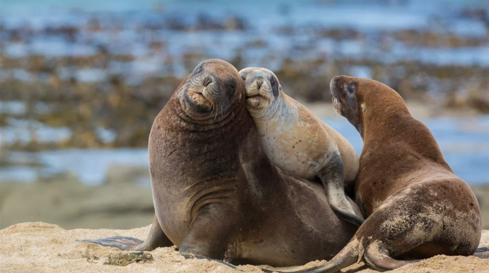

New Zealand is home to many species of animals. Sadly, over 4,000 species are considered endangered, including 22% Marine mammals.
The most popular species include: the Hector's Dolphin, the NZ Sea Lion, and the Maui Dolphin.

The Maui Dolphin
The New Zealand Sea Lion.

The Hector's Dolphin
Kaitiakitanga
As Kiwis, and part of the Mount Roskill community, It is our responsibility to show Kaitiakitanga towards our wildlife and
resources. We should feel proud to be from New Zealand and ready to do what we can to protect native wildlife potentially
facing risks of extinction. Please, grab your friends around school and implement these actions so we can save our endemic species.
Make sure to follow the right protocol when approaching dolphins on your boat and make sure to pick up after your cat!
Also, spread awareness around the community and remind people how important it is to protect and care for these species.
These small actions can make a big difference, allowing more people to be educated and convinced to take action. Start implementing today!